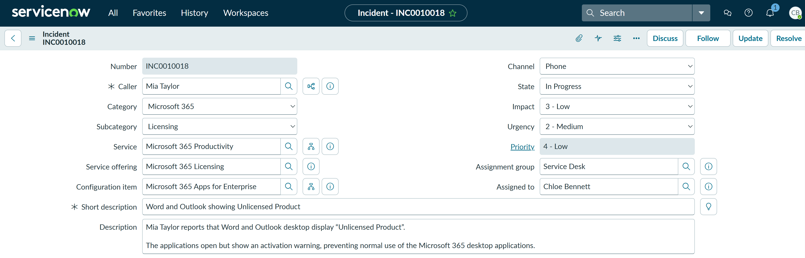
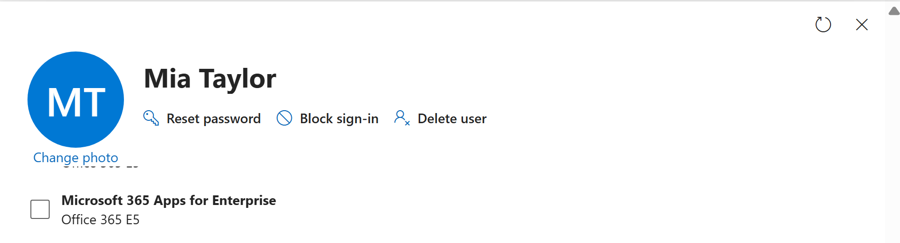
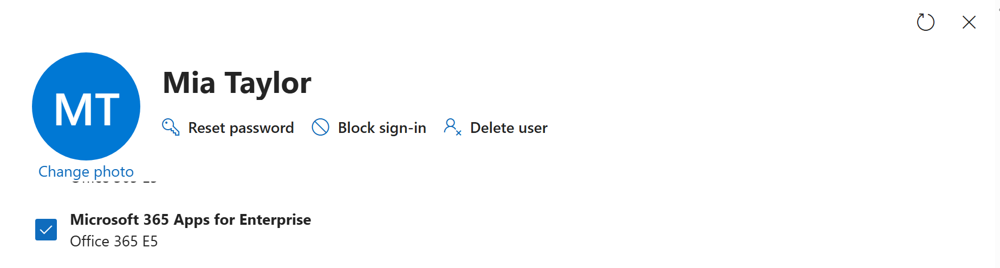
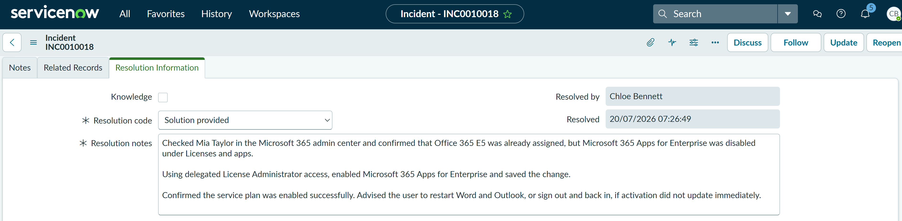

TS-012: Word and Outlook showing Unlicensed Product
Resolved an “Unlicensed Product” activation fault affecting Word and Outlook. The user already held an Office 365 E5 licence, but the Microsoft 365 Apps for Enterprise service plan was disabled.
Scenario
Mia Taylor reported that Word and Outlook were showing “Unlicensed Product”. I treated this as a Microsoft 365 licensing incident rather than a general software fault because the symptom affected Office desktop activation while the user account and mailbox remained available.
ServiceNow Ticket
The incident was logged as a single-user Microsoft 365 licensing issue and assigned to Chloe Bennett in the Service Desk. The category was set to Microsoft 365, the subcategory to Licensing, the service to Microsoft 365 Productivity, the service offering to Microsoft 365 Licensing, and the configuration item to Microsoft 365 Apps for Enterprise.

Investigation
Chloe checked Mia Taylor in the Microsoft 365 admin center under Users > Active users > Mia Taylor > Licenses and apps. Office 365 E5 was already assigned, but Microsoft 365 Apps for Enterprise was disabled. This matched the reported Word and Outlook desktop activation issue.

Fix Applied
Using delegated License Administrator access, Chloe enabled Microsoft 365 Apps for Enterprise for Mia Taylor and saved the change. This restored the service-plan entitlement required by Word, Excel, PowerPoint and Outlook desktop.

Validation
Chloe confirmed that the Microsoft 365 Apps for Enterprise service plan remained enabled after the change. Mia was advised to restart Word and Outlook, or sign out and back in, if activation did not refresh immediately.
Resolution
The incident was resolved with the code Solution provided. The resolution notes recorded the existing Office 365 E5 licence, the disabled service plan, the delegated licence change, the successful validation and the user guidance.

Summary
- I classified a single-user Office activation issue as Microsoft 365 > Licensing and linked it to the appropriate service, offering and configuration item.
- I confirmed that Office 365 E5 was already assigned but
Microsoft 365 Apps for Enterprisewas disabled. - Chloe used delegated License Administrator access to enable the approved service plan.
- I distinguished a disabled service plan from a completely missing Microsoft 365 licence.
- I validated the entitlement change and recorded the outcome in ServiceNow with the resolution code Solution provided.
- The user was advised to restart Office applications or sign out and back in if activation did not update immediately.